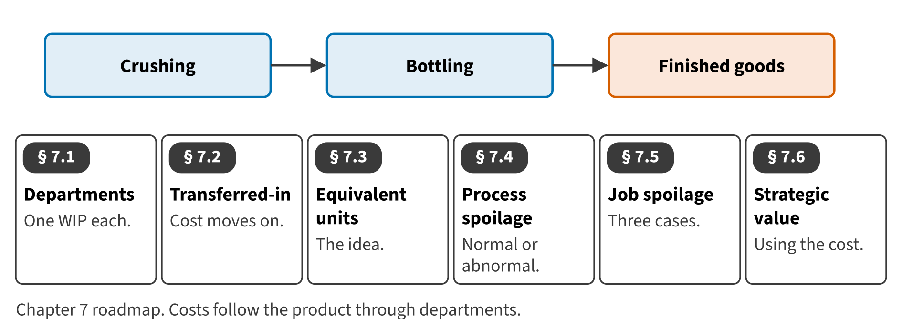

Part II · Measuring product cost · Chapter 7
Process Costing, Spoilage and the Value of Cost Information
تكاليف المراحل والتلف وقيمة معلومات التكلفة
In November 2027 the Oils division crushed a large batch of olives. The oil flowed from the crushing hall to the bottling line, liter after identical liter. No job cost sheet can follow such a flow. Costs are collected by department instead.

Start here
Then
What this chapter is tested on
| LOS | Official statement (ICMA, 2024) | In plain words | Depth here |
|---|---|---|---|
| D.2.f | demonstrate an understanding of process costing and the concept of equivalent units (no calculations required) | Explain process costing and the concept of equivalent units (no calculations required). | Full treatment |
| D.2.c | demonstrate an understanding of the proper accounting for normal and abnormal spoilage | Account for normal and abnormal spoilage, rework and scrap, especially in job costing. | Full treatment + case set |
| D.2.d | discuss the strategic value of cost information regarding products and services, pricing, overhead allocations, and other issues | Discuss the strategic value of cost information for products, pricing and overhead allocation. | Full treatment |
The official statements are quoted from the ICMA Learning Outcome Statements (effective September 1, 2024). The plain-words column restates them in simpler English. The exam may test any outcome up to Level C.
What you already know
Chapter 6 collected costs by job. Process costing uses the same accounts, raw materials, work in process and finished goods, but it keeps one work-in-process account for each department instead of one cost sheet for each job.
The 8 key terms
Every scene has Check Answers and Try Again. Try Again reshuffles rather than revealing. When you are wrong, the first thing you read is the reason for the option you chose, taken from the book's own explanations. Progress is saved in this browser.